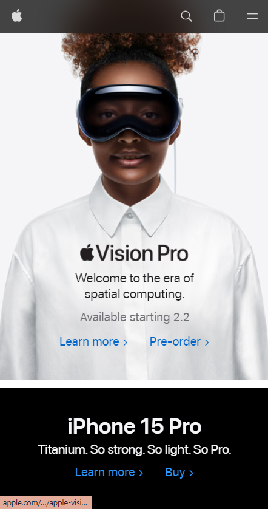
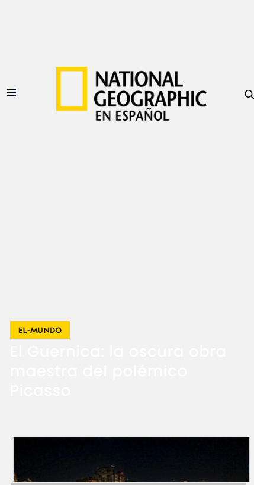

Visual Hierarchy
Organization/Company: Apple
Website Apple's website effectively utilizes visual hierarchy by placing essential elements like product images, headlines, and call-to-action buttons in prominent positions. The larger images of featured products and bold headlines naturally draw the user's attention, creating a clear hierarchy of information.
Rule of Thirds
Organization/Company: National Geographic
Website National Geographic's mobile page adheres to the Rule of Thirds with striking visuals positioned at the intersection points. Whether it's a captivating photograph or a featured story, the layout respects this rule, creating a visually appealing and balanced composition.
White Space and Clean Design
Organization/Company: Dropbox
WebsiteDropbox's mobile interface embodies clean design and effective use of white space. The simple layout with well-spaced icons and minimalistic elements not only enhances readability but also provides a user-friendly experience. The strategic use of white space contributes to a visually pleasing and clutter-free design.